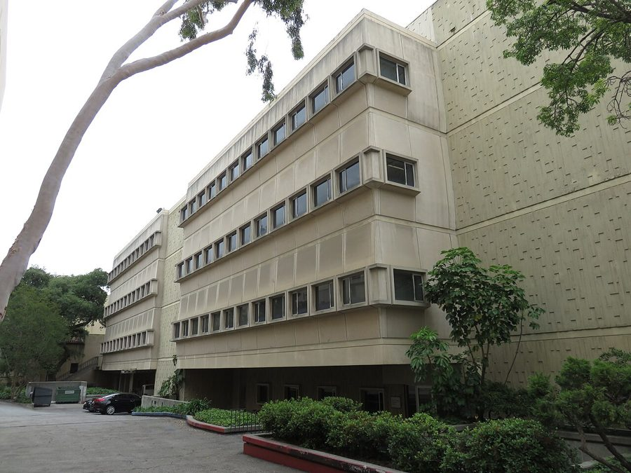
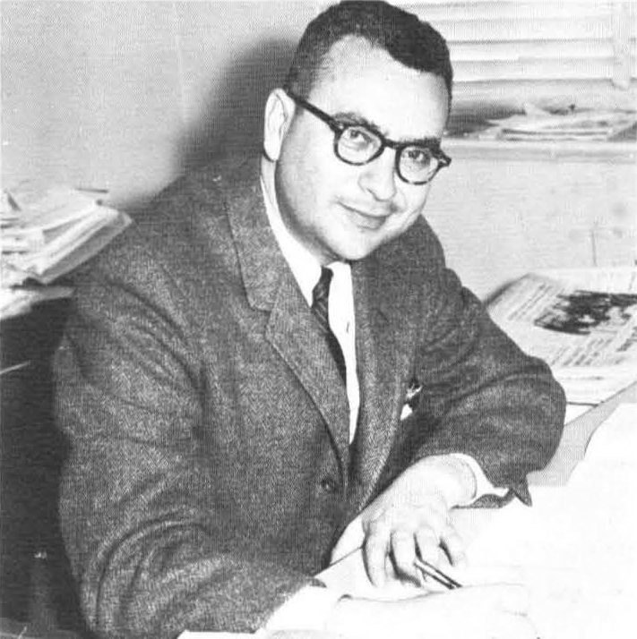
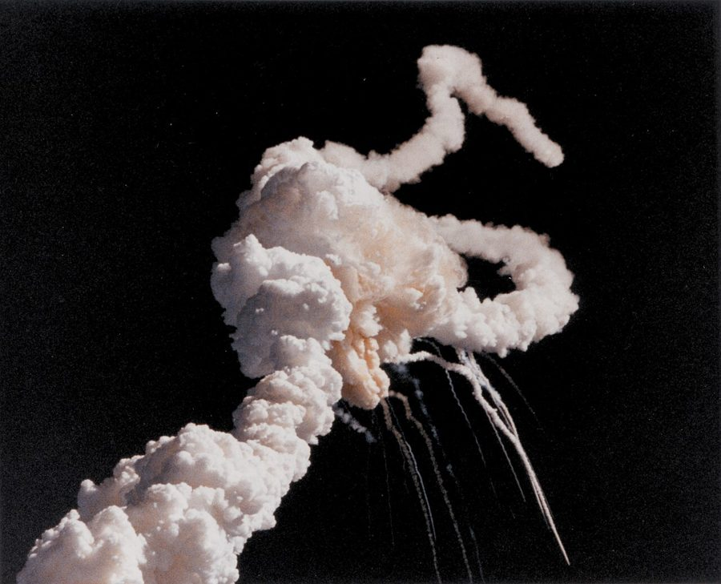

这一篇在做什么
作者交代三件事：物理学家是多小的一个圈子；1981 年他刚到加州理工时有多心虚，而走廊那头恰好坐着费曼；以及这本书的写法——真事，但做过加工。
前五段是"我当时的处境"，后三段是"这本书是什么"。读的时候抓住这个转折就不会丢。
背景：作者默认你知道的事
这本书是写给美国读者的，有些事作者一句带过。知道了这些，序言里的分量才读得出来。
加州理工（Caltech）

加州理工的劳里森高能物理实验楼，费曼的办公室在这栋楼里。书里的"走廊"就在这里面。
照片：Antony-22，2018，CC BY-SA 4.0，维基共享资源
全名 California Institute of Technology，在洛杉矶旁边的帕萨迪纳。它出名的地方是小而顶尖：本科生不到一千人，比国内一所普通高中还小，诺贝尔奖得主却出了几十位。
美国人提到它，分量相当于"理工科里的最高学府之一"，和麻省理工并称。
所以作者说自己"心虚"是有具体原因的：一个刚毕业的年轻人，走廊上坐着两位诺贝尔奖得主，周围是全国最好的学生。
走廊上的两位诺贝尔奖得主
 理查德·费曼，1980 年代，在加州理工。
加州理工年刊 The Big T，公有领域，维基共享资源
理查德·费曼，1980 年代，在加州理工。
加州理工年刊 The Big T，公有领域，维基共享资源

默里·盖尔曼，1965 年。
加州理工年刊 The Big T，公有领域，维基共享资源
费曼（Richard Feynman，1918–1988）：1965 年因量子电动力学获诺贝尔物理学奖，年轻时参加过原子弹的研制。他以讲课生动、爱开玩笑、不信权威出名。
故事开始的 1981 年他 63 岁，刚做完第二次癌症手术。
盖尔曼（Murray Gell-Mann，1929–2019）：1969 年获诺贝尔物理学奖，"夸克"这个名字是他起的。他博学、讲究、言辞锋利，和费曼性格相反。
两人办公室相邻，互相较劲多年，这是书里的一条线。
"挑战者号"和 O 形圈

1986 年 1 月 28 日，"挑战者号"航天飞机升空 73 秒后解体，七名宇航员遇难。
NASA，公有领域，维基共享资源
你听说过的没错。航天飞机两侧的固体火箭助推器是一节一节拼起来的，接缝处靠橡胶做的 O 形密封圈挡住里面的高温燃气。发射那天早上佛罗里达反常地冷，气温在零度上下。
本站示意图（大幅简化）。接缝在点火时会被撑开一点，密封圈必须在一瞬间弹回去跟上。
事故后总统成立了调查委员会，费曼是成员。在一次电视直播的听证会上，他把一小段密封圈用夹子夹扁，泡进面前的一杯冰水里，过一会儿拿出来松开夹子：橡胶没有弹回去。
不用公式，不用模型，全国观众都看懂了。序言里的 dunking it in ice water 说的就是这一幕。
注意时间：这是 1986 年，书里的故事发生在 1981–1982 年。作者是在用读者熟悉的"后来的费曼"来介绍他，故事里的费曼还没有这份大众名气。
弦理论，一句话
一种设想：基本粒子不是点，而是极小的、振动着的"弦"。1981 年它还是冷门，只有少数人在做（序言名单里的 John Schwarz 是其中之一）；作者写书时它已是理论物理最热的方向。
序言只是提一下，后面的章节会讲，现在知道这么多就够了。
词与短语
词条按在书里出现的顺序排。斜体小字是它所在的那句话里的几个词，方便你在纸质书上找到。
earn a Ph.D.
… hundred Americans earn a Ph.D. in …
拿到博士学位
学位用 earn（挣来的），也可以说 get。
pool
… from this small pool comes the …
一群人；人才库
本义是池子。this small pool、pool of individuals 都指这一小群物理学家。
arise from
… this has arisen from this dedicated …
产生于，源自
has arisen from 是完成时；arise – arose – arisen。
dedicated
… arisen from this dedicated pool of …
全身心投入的
graduate school
… those of graduate school and immediately …
研究生院（读硕士、博士的阶段）
不是「毕业的学校」。本科是 college / undergraduate。
find yourself
… time you find yourself and build …
找到自我，弄清自己想做什么
不是字面的「发现自己在某处」。
on the faculty
… I was on the faculty of …
是（某校的）教研人员
faculty 指一所学校的全体教师，不是「学院」。
intimidated
… feeling lost and intimidated. I was …
被镇住，心里发怵
别人太强、场面太大带来的那种胆怯。
unfocused in the vision I had for my future
… unusually unfocused in the vision I …
对自己的将来没有清晰的设想
vision 在这里是「对未来的构想」，不是视力。
land an office
… to have landed an office just …
弄到一间办公室
land 作动词：把好东西搞到手。常见 land a job。
just down the hall from …
… office just down the hall from …
和……在同一条走廊上，没几步远
hall 在美式英语里是走廊。down 没有「向下」的意思，只是「沿着」。全书出现十来次。
space shuttle commission
… the 1986 space shuttle commission, made …
航天飞机事故调查委员会
1986 年「挑战者号」失事后的总统调查委员会。
make headlines
… shuttle commission, made worldwide headlines demonstrating …
上头条，成为大新闻
riddle
… solution to the riddle of the …
谜，难解的问题
O-ring
… of the failed O-ring by dunking …
O 形密封圈
火箭助推器接缝处的橡胶圈，低温下失去弹性，是事故原因。
dunk
… failed O-ring by dunking it in …
把……浸一下
把饼干浸到咖啡里也是 dunk。
pound
… ice water and pounding it on …
用力敲、砸
和重量单位「磅」同形，这里是动词。
brittle
… it had become brittle. That was …
脆的，一碰就裂
vintage Feynman
… That was vintage Feynman: a triumph …
典型的、最地道的费曼作风
vintage 本指葡萄酒的年份。vintage + 人名 是固定用法：最能代表这个人的做派。
a triumph of A over B
… vintage Feynman: a triumph of common …
A 对 B 的胜利
irresistible
… year earlier Feynman’s irresistible memoir, “Surely …
让人无法抗拒的，欲罢不能的
resist（抵抗）+ 否定。
memoir
… earlier Feynman’s irresistible memoir, “Surely You’re …
回忆录
读作 /ˈmemwɑːr/。
explode on the bestseller lists
… Feynman!” had exploded on the bestseller …
一下子冲上畅销榜
the popular psyche
… lists. In the popular psyche, Feynman …
大众的心目中
popular 这里是「大众的」，不是「受欢迎的」。psyche 读 /ˈsaɪki/。
largely
… 1981, Feynman was largely unknown outside …
基本上，大体上
不是「大量地」。largely unknown = 基本没人知道。
fellowship
… been given my fellowship because my …
（给青年学者的）研究员职位、研究资助
不是「友谊」。拿这种职位的人叫 fellow。
catch the attention of
… dimensions, had caught the attention of …
引起……的注意
fit in
… I really fit in here, with …
融入；配得上待在这里
ponder
… my office and pondered the great …
反复琢磨
比 think about 更慢、更沉。
open problems
… the great open problems of physics. …
尚未解决的问题
open = 还没有定论。
fluke
… had been a fluke and that …
侥幸，碰巧成功
worthwhile
… again discover anything worthwhile. I suddenly …
有价值的，值得做的
get the courage to
… day I got the courage to …
鼓起勇气去……
undergo surgery
… He had just undergone his second …
接受手术
undergo – underwent – undergone。
have what it takes
… I have what it takes? How …
有那个本事，是那块料
it takes = 做成这件事所需要的。
near the end of his days
… famous scientist near the end of …
在他生命快到尽头的时候
days 指人的一生。
sought
… the answers I sought about the …
seek（寻找）的过去式
the answers I sought = 我要找的答案。
narrative
… it is the narrative of a …
叙事，讲述
rivalry
… last years, his rivalry with fellow …
竞争，较劲
对手是 rival。
fellow Nobel laureate
… rivalry with fellow Nobel laureate Murray …
同为诺贝尔奖得主的……
fellow 放在名词前 = 「同为……的」。laureate = 获奖者。
string theory
… beginnings of string theory, today the …
弦理论
on the frontiers of
… leading theory on the frontiers of …
在……的最前沿
frontier 本义是边疆。
cosmology
… the frontiers of physics and cosmology. …
宇宙学
take notes on
… novel. I took notes on and …
对……做笔记
record
… notes on and recorded many of …
录音
这里是「用录音机录下」，不是「记录」。后面的 transcripts 印证了这一点。
awestruck
… because I was awestruck. The passages …
敬畏得说不出话
awe（敬畏）+ struck（被击中）。
passages in italics
… awestruck. The passages in italics are …
斜体印的段落
transcript
… notes and the transcripts of some …
（录音的）文字整理稿
alter
… have combined and altered events, and, …
改动
other than
… events, and, other than the historical …
除了……之外
portray
… order to best portray my experience. …
描绘，呈现
the late Richard Feynman
… to the late Richard Feynman, for …
已故的理查德·费曼
the late + 人名 = 已故的。和「迟到」无关。
have confidence in
… ago, having the confidence that they …
对……有信心
两个值得停下来的句子
That was vintage Feynman: a triumph of common sense over computer models, of insight over equations.
— 第 3 段。本站译：这就是原汁原味的费曼：常识胜过计算机模型，洞察胜过方程。
结构是 a triumph of A over B, of C over D，第二个 of 前面省略了 a triumph。
这句是纯粹的赞美，也是全书对费曼的基本态度：他相信直觉和看得见的东西。
How do I know if I have what it takes?
— 第 5 段。本站译：我怎么知道自己是不是这块料？
这是作者去敲费曼门时带着的问题，也是整本书的主问题。后面每一章基本都在绕着它转。
检查一下理解
先在心里答，再点开。答错的那题，回书里把对应段落再读一遍。
1. 作者的办公室和费曼的办公室是什么关系？
同一条走廊，隔得很近。并不是共用办公室，也不是楼上楼下。第 4 段说走廊上有"两位"诺贝尔奖得主，另一位是第 6 段点名的盖尔曼。
2. 1981 年作者到加州理工时，费曼是家喻户晓的名人吗？
不是。物理圈内他早已是传奇，圈外基本没人知道。让他在大众中出名的两件事（畅销回忆录、航天飞机事故调查）都发生在 1985–1986 年，是书中故事之后的事。
3. 作者说他"突然明白了"加州理工自杀率为什么那么高。他想表达什么？
他在说自己当时的绝望：周复一周想不出任何东西，认定以前的成果只是侥幸。这是一句带苦味的自嘲，并不是在讨论自杀率这个话题本身。
4. 书里写的事情都是原样发生的吗？人名都是真的吗？
事情都是作者亲历，但他合并、改动过一些事件。人名只有六位用了真名（费曼、盖尔曼等历史人物和被引用了具体工作的人），其余人的名字和性格都改过。所以这是回忆录，不是小说，也不是逐字的纪实。
5. 书里的斜体段落是什么？
费曼说的话。来源是作者当时的笔记和谈话录音的文字稿。往后读到斜体，就知道是费曼在讲。